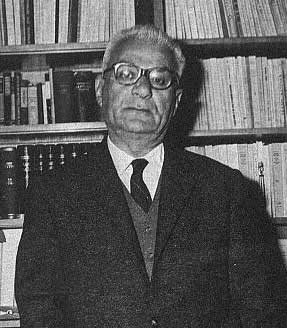

| Ο Ηλίας Βενέζης γεννήθηκε το 1904 στο Αϊβαλί της Μικράς Ασίας και πέθανε το 1973 στην Αθήνα. Το πραγματικό του όνομα είναι Ηλίας Μέλλος.
Από τη Μικρά Ασία εκπατρίστηκε για πρώτη φορά το 1914, όταν οι Τούρκοι άρχισαν διωγμούς εναντίον των χριστιανών. Η οικογένειά του
κατέφυγε στη Μυτιλήνη, τόπο καταγωγής της μητέρας του. Οδυνηρότερη ωστόσο, ήταν η εμπειρία του από τη Μικρασιατική καταστροφή του 1922,
κατά την οποία οι Τούρκοι τον συνέλαβαν και τον έστειλαν αιχμάλωτο στα εργατικά τάγματα της Ανατολής. Την περιπέτειά του αυτή αποτυπώνει
στο έργο του "Το Νούμερο 31328"(1931). Ήταν το νούμερο που είχε στο στρατόπεδο αιχμαλώτων. Οι δύσκολες συνθήκες της αιχμαλωσίας και ο
ξεριζωμός από τον τόπο του άφησαν τραύματα στην ψυχή του νεαρού τότε Βενέζη και επηρέασαν τα θέματα της πεζογραφίας του. Θεωρείται
από τους σημαντικότερους πεζογράφους της λογοτεχνικής γενιάς του 1930. Ήρθε σε στενή επαφή με το Στρατή Μυριβήλη και με τους
λογοτέχνες και καλλιτέχνες του νησιού και της εποχής. Τιμήθηκε με διάφορα βραβεία, παρασημοφορήθηκε και το 1957, έγινε Ακαδημαϊκός.
Από τα νεανικά του χρόνια άφησε να φανούν οι πρώτες λογοτεχνικές του επιδόσεις. Τη λογοτεχνική του προσφορά αποτελούν άρθρα, διηγήματα,
ποιήματα, πεζογραφήματα, μυθιστορήματα. `Αλλα έργα του είναι: το διήγημα "Ο Θάνατος", το βιβλίο: "Ο Μανώλης Λέκας και άλλα διηγήματα",
"Αιγαίο", "`Ανεμοι", "Γαλήνη", όπου διαπραγματεύεται το θέμα της εγκατάστασης των προσφύγων στην Ελλάδα, "Ώρα πολέμου", "Έξοδος", "Οι νικημένοι", "Περιηγήσεις", "Μικρασία χαίρε", "Αιολική γή", το δημοφιλέστερο και περισσότερο μεταφρασμένο από τα έργα του, που αποτελεί έναν ύμνο για το χαμένο παράδεισο των παιδικών χρόνων, ένα χρονικό του ελληνισμού της Μικρασίας πριν τον ξεριζωμό. Η αγάπη και η κατανόηση για τον ανθρώπινο πόνο τον συνοδεύουν σε όλη τη λογοτεχνική του πορεία, κατά την οποία σκύβει με συμπάθεια και ενδιαφέρον πάνω στα βάσανα ανθρώπων και λαών. |  |